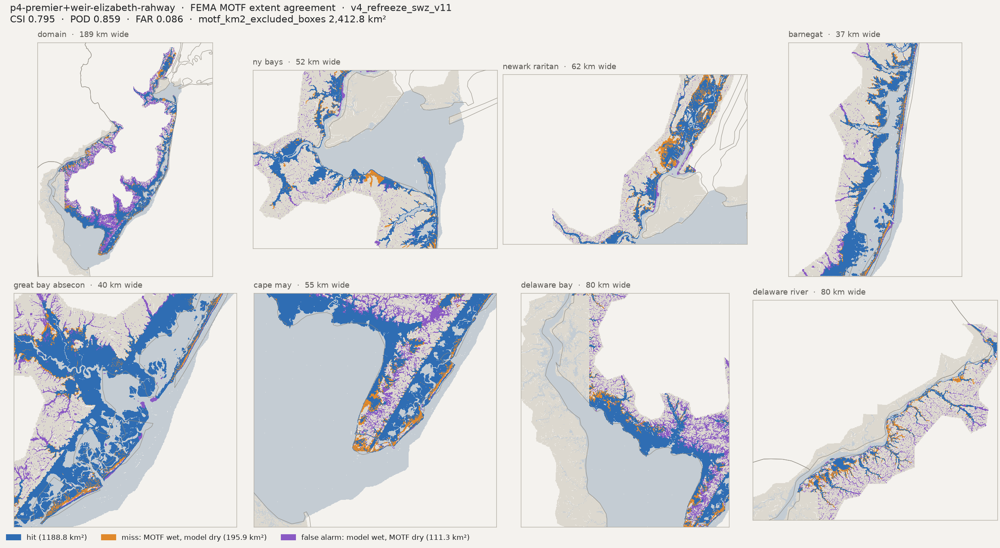

p4-premier+weir-elizabeth-rahway
Model 1.1.0. Run card, flags and the standard figure set. HWM numbers: estimator median, radius 50 m. Compare with p4-premier
Preliminary research diagnostics — not peer-reviewed results.
Flags
- native_rescore — Scores from the native 3.125 m flood map (re-score 2026-11-12, logs/floodmap_fix_2026-11-12/rows/v4_refreeze_swz_v11__p4-premier+weir-elizabeth-rahway.csv); metrics.csv still holds the 6.25 m row and the figures were drawn from it.
Headline
HWM: estimator median, radius 50 m, q ≤ 2, dry marks scored at ground (the _scored keys). CSI / POD / FAR on sheet-valid land; km² excl. = motf_km2_excluded_boxes.
Scores read from the full-resolution (3.125 m) flood map, the 2026-11-12 re-score (logs/floodmap_fix_2026-11-12/rows/v4_refreeze_swz_v11__p4-premier+weir-elizabeth-rahway.csv). metrics.csv still holds the earlier 6.25 m row (CSI 0.795, RMSE 0.355 m).
Run card
- domain
- v4_refreeze_swz_v11
- fingerprint
- faces=4881654 boundary_edges=4388 sha=4bc97aae885f0aa4
- fingerprint label
- v4_refreeze_swz_v11 STAGED 2026-11-06 — Model v1.1: v4_refreeze_swz with face z from the v1.1c flow bed (_subgrid_v1_1c)
- audit
- output WHOLE
- engine
- bin:v2.3.3-winddir-igk-igseed-wmseed-swomp-2-gf11@dd78d82a
- snapwave_direction
- imposed
- engine_seed
- fixed
- meteo
- wind:naccs_blend pres:era5-bilinear grid:engine
- weir
- md5:e11966fc keansburg_levee_waackaack_gate_fixed keansburg_thornes_reach_nld keansburg_west_tie east_keansburg_bayfront_dune pews_levee_gapclosed overpeck_bypass_sill_turnpike_east_toe elizabeth_rb_south_nld4505000007 elizabeth_lb_south_nld4505000009 rahway_south_branch_rb_nld4505000027 bayway_elizabeth_river_wall_nld1205000013 elizabeth_rb_south_upstream_tie elizabeth_lb_south_east_tie rahway_sb_rb_upstream_tie rahway_sb_west_flank_lidar_sill elizabeth_rb_south_bayway_gap_lidar_sill elizabeth_rb_upstream_strip_lidar_sill elizabeth_rb_south_rail_corridor_lidar_sill elizabeth_rb_mesh_guard_1 elizabeth_rb_mesh_guard_2 elizabeth_rb_mesh_guard_3 elizabeth_rb_mesh_guard_4 elizabeth_rb_mesh_guard_5 rahway_sb_mesh_guard_9 rahway_sb_mesh_guard_10
- infiltration
- cnb:e1.5
- subgrid
- _subgrid_v1_1c@4f509cff
- wind_scale
- replaced:naccs_blend
- sea_level_offset
- none
- extra_discharge
- none
- extent_admissible
- True
- waves
- on
- window
- 20121028 000000 → 20121031 000000
- engine build
- $Rev: v2.3.3 mt. Faber+ nj-winddir-fix-1 nj-igk-fix-1 nj-igseed-1 nj-wmseed-1 nj-swomp-1 nj-swomp-2
- solve host / job
- hal0383.amarel.rutgers.edu / 63617802 (32 threads)
- wall
- sfincs.log total 14,714 s, SnapWave 4,091 s; sacct 04:09:25 FAILED on hal0383
- restarts
- 0 resume(s)
- restart_history.txt
- 2026-11-06 21:31:14 finish: {'segments': 0, 'rst_removed': 12}
- gallery built
- 2026-11-09T11:15:06 on hal0379.amarel.rutgers.edu (381.5 s, peak RSS 20.2 GB)
- reference arm
- p4-premier
Figures
These figures were drawn from the earlier 6.25 m flood map (gallery built 2026-11-09); captions that quote a score quote that map's. The headline above is the full-resolution re-score.
Peak water level (m NAVD88)

Flood depth on normally-dry land

High-water marks: residual map

High-water marks: measured vs modelled, by basin

FEMA MOTF extent agreement


Gauges: measured vs modelled water level

Gauges: peak and timing errors

Peak significant wave height

Full metrics row (native re-score)
979 columns
| floodmap | native 3.125 m |
| peak_zb_sss_great_kills_m | -1.5018250942230225 |
| peak_obs_sss_great_kills_m | 3.650640566666667 |
| peak_obs_time_sss_great_kills | 2012-10-30T00:42 |
| peak_mod_full_sss_great_kills_m | 3.6843724250793457 |
| peak_mod_full_time_sss_great_kills | 2012-10-30T01:00 |
| obs_offset_sss_great_kills_m | -0.34 |
| peak_err_sss_great_kills_m | 0.0337318584126786 |
| peak_lag_sss_great_kills_min | 18.0 |
| peak_zb_sss_arthur_kill_mouth_m | -1.062054991722107 |
| peak_obs_sss_arthur_kill_mouth_m | 3.8134290000000006 |
| peak_obs_time_sss_arthur_kill_mouth | 2012-10-30T00:36 |
| peak_mod_full_sss_arthur_kill_mouth_m | 3.9307260513305664 |
| peak_mod_full_time_sss_arthur_kill_mouth | 2012-10-30T00:50 |
| peak_err_sss_arthur_kill_mouth_m | 0.1172970513305657 |
| peak_lag_sss_arthur_kill_mouth_min | 14.0 |
| peak_zb_sss_narrows_si_m | -2.052652597427368 |
| peak_obs_sss_narrows_si_m | 3.4239073 |
| peak_obs_time_sss_narrows_si | 2012-10-30T00:06 |
| peak_mod_full_sss_narrows_si_m | 3.427199363708496 |
| peak_mod_full_time_sss_narrows_si | 2012-10-30T01:00 |
| peak_err_sss_narrows_si_m | 0.0032920637084958 |
| peak_lag_sss_narrows_si_min | 54.0 |
| peak_zb_sss_narrows_bkln_m | -3.9864342212677 |
| peak_obs_sss_narrows_bkln_m | 3.315567833333333 |
| peak_obs_time_sss_narrows_bkln | 2012-10-30T00:24 |
| peak_mod_full_sss_narrows_bkln_m | 3.4006800651550293 |
| peak_mod_full_time_sss_narrows_bkln | 2012-10-30T01:00 |
| peak_err_sss_narrows_bkln_m | 0.0851122318216961 |
| peak_lag_sss_narrows_bkln_min | 36.0 |
| peak_zb_sandy_hook_m | -4.570703029632568 |
| peak_obs_sandy_hook_m | 3.175 |
| peak_obs_time_sandy_hook | 2012-10-29T23:36 |
| peak_mod_full_sandy_hook_m | 3.380923271179199 |
| peak_mod_full_time_sandy_hook | 2012-10-30T01:10 |
| peak_mod_prefail_sandy_hook_m | 2.879966259002685 |
| peak_err_prefail_sandy_hook_m | -0.2950337409973143 |
| peak_record_ends_sandy_hook | 2012-10-29 23:36 |
| peak_zb_usgs_stormtide_sea_bright_m | -2.3048408031463623 |
| peak_obs_usgs_stormtide_sea_bright_m | 3.4651196864959743 |
| peak_obs_time_usgs_stormtide_sea_bright | 2012-10-30T00:12 |
| peak_mod_full_usgs_stormtide_sea_bright_m | 3.648585081100464 |
| peak_mod_full_time_usgs_stormtide_sea_bright | 2012-10-29T23:40 |
| peak_err_usgs_stormtide_sea_bright_m | 0.1834653946044895 |
| peak_lag_usgs_stormtide_sea_bright_min | -32.0 |
| peak_zb_usgs_tidal_sea_bright_m | -4.364447116851807 |
| peak_obs_usgs_tidal_sea_bright_m | 1.383792 |
| peak_obs_time_usgs_tidal_sea_bright | 2012-10-29T01:12 |
| peak_mod_full_usgs_tidal_sea_bright_m | 3.101689338684082 |
| peak_mod_full_time_usgs_tidal_sea_bright | 2012-10-30T02:20 |
| peak_pub_usgs_tidal_sea_bright_m | 2.914 |
| peak_pub_time_usgs_tidal_sea_bright | 2012-10-30 00:54 |
| peak_err_pub_usgs_tidal_sea_bright_m | 0.1876893386840818 |
| peak_lag_pub_usgs_tidal_sea_bright_min | 86.0 |
| peak_mod_prefail_usgs_tidal_sea_bright_m | 1.14623761177063 |
| peak_err_prefail_usgs_tidal_sea_bright_m | -0.2375543882293702 |
| peak_record_ends_usgs_tidal_sea_bright | 2012-10-29 04:00 |
| peak_zb_usgs_tidal_shark_river_m | -4.12901782989502 |
| peak_obs_usgs_tidal_shark_river_m | 1.527048 |
| peak_obs_time_usgs_tidal_shark_river | 2012-10-29T00:00 |
| peak_mod_full_usgs_tidal_shark_river_m | 2.7896533012390137 |
| peak_mod_full_time_usgs_tidal_shark_river | 2012-10-30T00:30 |
| peak_pub_usgs_tidal_shark_river_m | 3.335 |
| peak_pub_time_usgs_tidal_shark_river | 2012-10-29 23:18 |
| peak_err_pub_usgs_tidal_shark_river_m | -0.5453466987609863 |
| peak_lag_pub_usgs_tidal_shark_river_min | 72.0 |
| peak_mod_prefail_usgs_tidal_shark_river_m | 1.265709638595581 |
| peak_err_prefail_usgs_tidal_shark_river_m | -0.2643863614044188 |
| peak_record_ends_usgs_tidal_shark_river | 2012-10-29 04:00 |
| peak_zb_noaa_atlantic_city_m | -7.123184680938721 |
| peak_obs_noaa_atlantic_city_m | 1.915 |
| peak_obs_time_noaa_atlantic_city | 2012-10-30T00:24 |
| peak_mod_full_noaa_atlantic_city_m | 2.411914587020874 |
| peak_mod_full_time_noaa_atlantic_city | 2012-10-29T22:40 |
| peak_err_noaa_atlantic_city_m | 0.496914587020874 |
| peak_lag_noaa_atlantic_city_min | -104.0 |
| peak_zb_noaa_cape_may_m | -6.598322868347168 |
| peak_obs_noaa_cape_may_m | 1.798 |
| peak_obs_time_noaa_cape_may | 2012-10-29T13:42 |
| peak_mod_full_noaa_cape_may_m | 1.8006446361541748 |
| peak_mod_full_time_noaa_cape_may | 2012-10-30T01:20 |
| peak_err_noaa_cape_may_m | 0.0026446361541747 |
| peak_lag_noaa_cape_may_min | 698.0 |
| peak_zb_usgs_tidal_mantoloking_m | -2.4557981491088867 |
| peak_obs_usgs_tidal_mantoloking_m | 2.1061680000000003 |
| peak_obs_time_usgs_tidal_mantoloking | 2012-10-30T06:18 |
| peak_mod_full_usgs_tidal_mantoloking_m | 2.0709238052368164 |
| peak_mod_full_time_usgs_tidal_mantoloking | 2012-10-30T06:30 |
| peak_err_usgs_tidal_mantoloking_m | -0.0352441947631838 |
| peak_lag_usgs_tidal_mantoloking_min | 12.0 |
| peak_zb_usgs_tidal_barnegat_light_m | -7.473830223083496 |
| peak_obs_usgs_tidal_barnegat_light_m | 1.588008 |
| peak_obs_time_usgs_tidal_barnegat_light | 2012-10-30T00:24 |
| peak_mod_full_usgs_tidal_barnegat_light_m | 1.8001422882080078 |
| peak_mod_full_time_usgs_tidal_barnegat_light | 2012-10-30T00:20 |
| peak_err_usgs_tidal_barnegat_light_m | 0.2121342882080077 |
| peak_lag_usgs_tidal_barnegat_light_min | -4.0 |
| peak_zb_usgs_tidal_ship_bottom_m | -4.847646713256836 |
| peak_obs_usgs_tidal_ship_bottom_m | 1.024128 |
| peak_obs_time_usgs_tidal_ship_bottom | 2012-10-29T02:54 |
| peak_mod_full_usgs_tidal_ship_bottom_m | 1.87246835231781 |
| peak_mod_full_time_usgs_tidal_ship_bottom | 2012-10-30T03:10 |
| peak_pub_usgs_tidal_ship_bottom_m | 1.966 |
| peak_pub_time_usgs_tidal_ship_bottom | 2012-10-30 03:00 |
| peak_err_pub_usgs_tidal_ship_bottom_m | -0.0935316476821899 |
| peak_lag_pub_usgs_tidal_ship_bottom_min | 10.0 |
| peak_mod_prefail_usgs_tidal_ship_bottom_m | 0.7970609664916992 |
| peak_err_prefail_usgs_tidal_ship_bottom_m | -0.2270670335083007 |
| peak_record_ends_usgs_tidal_ship_bottom | 2012-10-29 03:54 |
| peak_zb_usgs_tidal_tuckerton_m | -2.1096279621124268 |
| peak_obs_usgs_tidal_tuckerton_m | 1.591056 |
| peak_obs_time_usgs_tidal_tuckerton | 2012-10-30T04:00 |
| peak_mod_full_usgs_tidal_tuckerton_m | 2.3639156818389893 |
| peak_mod_full_time_usgs_tidal_tuckerton | 2012-10-30T00:30 |
| peak_pub_usgs_tidal_tuckerton_m | 2.53 |
| peak_pub_time_usgs_tidal_tuckerton | 2012-10-29 23:48 |
| peak_err_pub_usgs_tidal_tuckerton_m | -0.1660843181610105 |
| peak_lag_pub_usgs_tidal_tuckerton_min | 42.0 |
| peak_mod_prefail_usgs_tidal_tuckerton_m | 1.1260510683059692 |
| peak_err_prefail_usgs_tidal_tuckerton_m | -0.1998289316940307 |
| peak_record_ends_usgs_tidal_tuckerton | 2012-10-29 03:54 |
| peak_zb_usgs_tidal_absecon_creek_m | -1.0937918424606323 |
| peak_obs_usgs_tidal_absecon_creek_m | 1.87452 |
| peak_obs_time_usgs_tidal_absecon_creek | 2012-10-30T04:00 |
| peak_mod_full_usgs_tidal_absecon_creek_m | 2.368852138519287 |
| peak_mod_full_time_usgs_tidal_absecon_creek | 2012-10-30T01:10 |
| peak_pub_usgs_tidal_absecon_creek_m | 2.295 |
| peak_pub_time_usgs_tidal_absecon_creek | 2012-10-30 01:06 |
| peak_err_pub_usgs_tidal_absecon_creek_m | 0.0738521385192871 |
| peak_lag_pub_usgs_tidal_absecon_creek_min | 4.0 |
| peak_mod_prefail_usgs_tidal_absecon_creek_m | 1.2353419065475464 |
| peak_err_prefail_usgs_tidal_absecon_creek_m | -0.2581780934524538 |
| peak_record_ends_usgs_tidal_absecon_creek | 2012-10-29 03:54 |
| peak_zb_usgs_tidal_inside_thorofare_m | -4.974030494689941 |
| peak_obs_usgs_tidal_inside_thorofare_m | 1.712976 |
| peak_obs_time_usgs_tidal_inside_thorofare | 2012-10-30T04:00 |
| peak_mod_full_usgs_tidal_inside_thorofare_m | 2.294029951095581 |
| peak_mod_full_time_usgs_tidal_inside_thorofare | 2012-10-30T01:40 |
| peak_pub_usgs_tidal_inside_thorofare_m | 2.323 |
| peak_pub_time_usgs_tidal_inside_thorofare | 2012-10-30 01:42 |
| peak_err_pub_usgs_tidal_inside_thorofare_m | -0.0289700489044189 |
| peak_lag_pub_usgs_tidal_inside_thorofare_min | -2.0 |
| peak_mod_prefail_usgs_tidal_inside_thorofare_m | 1.1054625511169434 |
| peak_err_prefail_usgs_tidal_inside_thorofare_m | -0.3301454488830566 |
| peak_record_ends_usgs_tidal_inside_thorofare | 2012-10-29 03:54 |
| peak_zb_usgs_tidal_absecon_channel_m | -3.296544551849365 |
| peak_obs_usgs_tidal_absecon_channel_m | 1.5575280000000002 |
| peak_obs_time_usgs_tidal_absecon_channel | 2012-10-29T01:06 |
| peak_mod_full_usgs_tidal_absecon_channel_m | 2.3034677505493164 |
| peak_mod_full_time_usgs_tidal_absecon_channel | 2012-10-30T00:30 |
| peak_pub_usgs_tidal_absecon_channel_m | 2.38 |
| peak_pub_time_usgs_tidal_absecon_channel | 2012-10-30 00:54 |
| peak_err_pub_usgs_tidal_absecon_channel_m | -0.0765322494506834 |
| peak_lag_pub_usgs_tidal_absecon_channel_min | -24.0 |
| peak_mod_prefail_usgs_tidal_absecon_channel_m | 1.1450657844543457 |
| peak_err_prefail_usgs_tidal_absecon_channel_m | -0.4124622155456545 |
| peak_record_ends_usgs_tidal_absecon_channel | 2012-10-29 03:54 |
| peak_zb_usgs_tidal_ocean_city_m | -7.289493083953857 |
| peak_obs_usgs_tidal_ocean_city_m | 2.2098 |
| peak_obs_time_usgs_tidal_ocean_city | 2012-10-30T00:00 |
| peak_mod_full_usgs_tidal_ocean_city_m | 2.143113851547241 |
| peak_mod_full_time_usgs_tidal_ocean_city | 2012-10-30T00:30 |
| peak_err_usgs_tidal_ocean_city_m | -0.0666861484527587 |
| peak_lag_usgs_tidal_ocean_city_min | 30.0 |
| peak_zb_usgs_tidal_sea_isle_m | -1.7741228342056274 |
| peak_obs_usgs_tidal_sea_isle_m | 1.575816 |
| peak_obs_time_usgs_tidal_sea_isle | 2012-10-29T01:18 |
| peak_mod_full_usgs_tidal_sea_isle_m | 2.0609207153320312 |
| peak_mod_full_time_usgs_tidal_sea_isle | 2012-10-30T00:50 |
| peak_pub_usgs_tidal_sea_isle_m | 2.304 |
| peak_pub_time_usgs_tidal_sea_isle | 2012-10-30 00:18 |
| peak_err_pub_usgs_tidal_sea_isle_m | -0.2430792846679685 |
| peak_lag_pub_usgs_tidal_sea_isle_min | 32.0 |
| peak_mod_prefail_usgs_tidal_sea_isle_m | 1.1787095069885254 |
| peak_err_prefail_usgs_tidal_sea_isle_m | -0.3971064930114747 |
| peak_record_ends_usgs_tidal_sea_isle | 2012-10-29 03:54 |
| peak_zb_usgs_tidal_avalon_m | -8.10555648803711 |
| peak_obs_usgs_tidal_avalon_m | 1.139952 |
| peak_obs_time_usgs_tidal_avalon | 2012-10-30T04:00 |
| peak_mod_full_usgs_tidal_avalon_m | 2.0046865940093994 |
| peak_mod_full_time_usgs_tidal_avalon | 2012-10-30T00:40 |
| peak_pub_usgs_tidal_avalon_m | 2.179 |
| peak_pub_time_usgs_tidal_avalon | 2012-10-29 23:24 |
| peak_err_pub_usgs_tidal_avalon_m | -0.1743134059906004 |
| peak_lag_pub_usgs_tidal_avalon_min | 76.0 |
| peak_mod_prefail_usgs_tidal_avalon_m | 0.3035632967948913 |
| peak_err_prefail_usgs_tidal_avalon_m | -0.5986447032051087 |
| peak_record_ends_usgs_tidal_avalon | 2012-10-28 03:54 |
| peak_zb_usgs_tidal_stone_harbor_m | -8.05798625946045 |
| peak_obs_usgs_tidal_stone_harbor_m | 1.551432 |
| peak_obs_time_usgs_tidal_stone_harbor | 2012-10-29T01:12 |
| peak_mod_full_usgs_tidal_stone_harbor_m | 1.8412598371505735 |
| peak_mod_full_time_usgs_tidal_stone_harbor | 2012-10-30T01:00 |
| peak_pub_usgs_tidal_stone_harbor_m | 2.051 |
| peak_pub_time_usgs_tidal_stone_harbor | 2012-10-30 01:36 |
| peak_err_pub_usgs_tidal_stone_harbor_m | -0.2097401628494264 |
| peak_lag_pub_usgs_tidal_stone_harbor_min | -36.0 |
| peak_mod_prefail_usgs_tidal_stone_harbor_m | 1.1881037950515747 |
| peak_err_prefail_usgs_tidal_stone_harbor_m | -0.3633282049484254 |
| peak_record_ends_usgs_tidal_stone_harbor | 2012-10-29 03:54 |
| peak_zb_usgs_tidal_cape_may_harbor_m | -1.5647752285003662 |
| peak_obs_usgs_tidal_cape_may_harbor_m | 1.79832 |
| peak_obs_time_usgs_tidal_cape_may_harbor | 2012-10-29T12:42 |
| peak_mod_full_usgs_tidal_cape_may_harbor_m | 1.560227394104004 |
| peak_mod_full_time_usgs_tidal_cape_may_harbor | 2012-10-30T01:00 |
| peak_mod_prefail_usgs_tidal_cape_may_harbor_m | 1.560227394104004 |
| peak_err_prefail_usgs_tidal_cape_may_harbor_m | -0.2380926058959962 |
| peak_record_ends_usgs_tidal_cape_may_harbor | 2012-10-30 03:54 |
| peak_zb_sss_great_bay_m | 0.1733946055173874 |
| peak_obs_sss_great_bay_m | 2.389551566666667 |
| peak_obs_time_sss_great_bay | 2012-10-30T02:00 |
| peak_mod_full_sss_great_bay_m | 2.1910622119903564 |
| peak_mod_full_time_sss_great_bay | 2012-10-30T02:20 |
| peak_err_sss_great_bay_m | -0.1984893546763104 |
| peak_lag_sss_great_bay_min | 20.0 |
| peak_zb_sss_great_egg_m | -1.4158239364624023 |
| peak_obs_sss_great_egg_m | 2.098467566666667 |
| peak_obs_time_sss_great_egg | 2012-10-30T00:36 |
| peak_mod_full_sss_great_egg_m | 2.0197715759277344 |
| peak_mod_full_time_sss_great_egg | 2012-10-30T01:00 |
| peak_err_sss_great_egg_m | -0.0786959907389324 |
| peak_lag_sss_great_egg_min | 24.0 |
| peak_zb_sss_cape_may_m | -8.127169609069824 |
| peak_obs_sss_cape_may_m | 2.24273711641651 |
| peak_obs_time_sss_cape_may | 2012-10-29T13:48 |
| peak_mod_full_sss_cape_may_m | 1.635072112083435 |
| peak_mod_full_time_sss_cape_may | 2012-10-30T00:30 |
| peak_mod_prefail_sss_cape_may_m | 1.635072112083435 |
| peak_err_prefail_sss_cape_may_m | -0.6076650043330756 |
| peak_record_ends_sss_cape_may | 2012-10-30 03:12 |
| peak_zb_noaa_lewes_m | -8.599800109863281 |
| peak_obs_noaa_lewes_m | 1.853 |
| peak_obs_time_noaa_lewes | 2012-10-29T13:00 |
| peak_mod_full_noaa_lewes_m | 1.686959743499756 |
| peak_mod_full_time_noaa_lewes | 2012-10-29T13:00 |
| peak_err_noaa_lewes_m | -0.1660402565002441 |
| peak_lag_noaa_lewes_min | 0.0 |
| peak_zb_noaa_brandywine_shoal_m | -3.865700483322144 |
| peak_obs_noaa_brandywine_shoal_m | 1.5445000000000004 |
| peak_obs_time_noaa_brandywine_shoal | 2012-10-29T12:00 |
| peak_mod_full_noaa_brandywine_shoal_m | 1.533278226852417 |
| peak_mod_full_time_noaa_brandywine_shoal | 2012-10-29T13:10 |
| peak_mod_prefail_noaa_brandywine_shoal_m | 1.3860232830047607 |
| peak_err_prefail_noaa_brandywine_shoal_m | -0.1584767169952396 |
| peak_record_ends_noaa_brandywine_shoal | 2012-10-29 12:00 |
| peak_zb_noaa_ship_john_shoal_m | -4.995533466339111 |
| peak_obs_noaa_ship_john_shoal_m | 1.918 |
| peak_obs_time_noaa_ship_john_shoal | 2012-10-30T04:12 |
| peak_mod_full_noaa_ship_john_shoal_m | 1.8723381757736208 |
| peak_mod_full_time_noaa_ship_john_shoal | 2012-10-30T03:50 |
| peak_err_noaa_ship_john_shoal_m | -0.0456618242263795 |
| peak_lag_noaa_ship_john_shoal_min | -22.0 |
| peak_zb_noaa_reedy_point_m | -8.337135314941406 |
| peak_obs_noaa_reedy_point_m | 1.869 |
| peak_obs_time_noaa_reedy_point | 2012-10-30T05:42 |
| peak_mod_full_noaa_reedy_point_m | 1.757784366607666 |
| peak_mod_full_time_noaa_reedy_point | 2012-10-30T15:40 |
| peak_err_noaa_reedy_point_m | -0.1112156333923339 |
| peak_lag_noaa_reedy_point_min | 598.0 |
| peak_zb_noaa_delaware_city_m | -7.879655838012695 |
| peak_obs_noaa_delaware_city_m | 2.052 |
| peak_obs_time_noaa_delaware_city | 2012-10-30T05:54 |
| peak_mod_full_noaa_delaware_city_m | 1.8132216930389404 |
| peak_mod_full_time_noaa_delaware_city | 2012-10-30T06:40 |
| peak_err_noaa_delaware_city_m | -0.2387783069610596 |
| peak_lag_noaa_delaware_city_min | 46.0 |
| peak_zb_noaa_marcus_hook_m | -6.720826625823975 |
| peak_obs_noaa_marcus_hook_m | 2.179 |
| peak_obs_time_noaa_marcus_hook | 2012-10-30T06:48 |
| peak_mod_full_noaa_marcus_hook_m | 1.969306230545044 |
| peak_mod_full_time_noaa_marcus_hook | 2012-10-30T07:50 |
| peak_err_noaa_marcus_hook_m | -0.2096937694549558 |
| peak_lag_noaa_marcus_hook_min | 62.0 |
| peak_zb_noaa_philadelphia_m | -4.274573802947998 |
| peak_obs_noaa_philadelphia_m | 2.292 |
| peak_obs_time_noaa_philadelphia | 2012-10-30T08:06 |
| peak_mod_full_noaa_philadelphia_m | 2.115493059158325 |
| peak_mod_full_time_noaa_philadelphia | 2012-10-30T09:00 |
| peak_err_noaa_philadelphia_m | -0.1765069408416746 |
| peak_lag_noaa_philadelphia_min | 54.0 |
| peak_zb_noaa_burlington_m | -14.647468566894531 |
| peak_obs_noaa_burlington_m | 2.4935000000000005 |
| peak_obs_time_noaa_burlington | 2012-10-30T09:12 |
| peak_mod_full_noaa_burlington_m | 2.321549892425537 |
| peak_mod_full_time_noaa_burlington | 2012-10-30T09:50 |
| peak_err_noaa_burlington_m | -0.1719501075744633 |
| peak_lag_noaa_burlington_min | 38.0 |
| peak_zb_noaa_newbold_m | -15.88861846923828 |
| peak_obs_noaa_newbold_m | 2.5809999999999995 |
| peak_obs_time_noaa_newbold | 2012-10-30T09:18 |
| peak_mod_full_noaa_newbold_m | 2.388788938522339 |
| peak_mod_full_time_noaa_newbold | 2012-10-30T10:00 |
| peak_err_noaa_newbold_m | -0.1922110614776606 |
| peak_lag_noaa_newbold_min | 42.0 |
| peak_zb_usgs_tidal_sluice_creek_m | -0.2426208108663559 |
| peak_obs_usgs_tidal_sluice_creek_m | 1.831848 |
| peak_obs_time_usgs_tidal_sluice_creek | 2012-10-30T04:48 |
| peak_mod_full_usgs_tidal_sluice_creek_m | 1.9513906240463257 |
| peak_mod_full_time_usgs_tidal_sluice_creek | 2012-10-30T03:50 |
| peak_err_usgs_tidal_sluice_creek_m | 0.1195426240463257 |
| peak_lag_usgs_tidal_sluice_creek_min | -58.0 |
| peak_zb_usgs_tidal_bivalve_m | -7.203732490539551 |
| peak_obs_usgs_tidal_bivalve_m | 1.3929360000000002 |
| peak_obs_time_usgs_tidal_bivalve | 2012-10-29T01:48 |
| peak_mod_full_usgs_tidal_bivalve_m | 2.446604013442993 |
| peak_mod_full_time_usgs_tidal_bivalve | 2012-10-30T02:50 |
| peak_pub_usgs_tidal_bivalve_m | 2.146 |
| peak_pub_time_usgs_tidal_bivalve | 2012-10-30 02:30 |
| peak_err_pub_usgs_tidal_bivalve_m | 0.3006040134429932 |
| peak_lag_pub_usgs_tidal_bivalve_min | 20.0 |
| peak_mod_prefail_usgs_tidal_bivalve_m | 1.2944132089614868 |
| peak_err_prefail_usgs_tidal_bivalve_m | -0.0985227910385133 |
| peak_record_ends_usgs_tidal_bivalve | 2012-10-29 03:54 |
| peak_zb_usgs_tidal_greenwich_m | -4.599920749664307 |
| peak_obs_usgs_tidal_greenwich_m | 1.286256 |
| peak_obs_time_usgs_tidal_greenwich | 2012-10-29T03:18 |
| peak_mod_full_usgs_tidal_greenwich_m | 1.8335627317428589 |
| peak_mod_full_time_usgs_tidal_greenwich | 2012-10-30T04:50 |
| peak_pub_usgs_tidal_greenwich_m | 1.801 |
| peak_pub_time_usgs_tidal_greenwich | 2012-10-30 05:00 |
| peak_err_pub_usgs_tidal_greenwich_m | 0.0325627317428589 |
| peak_lag_pub_usgs_tidal_greenwich_min | -10.0 |
| peak_mod_prefail_usgs_tidal_greenwich_m | 1.1318851709365845 |
| peak_err_prefail_usgs_tidal_greenwich_m | -0.1543708290634156 |
| peak_record_ends_usgs_tidal_greenwich | 2012-10-29 03:54 |
| peak_zb_usgs_tidal_waretown_m | -1.282608151435852 |
| peak_obs_usgs_tidal_waretown_m | 1.682496 |
| peak_obs_time_usgs_tidal_waretown | 2012-10-30T03:30 |
| peak_mod_full_usgs_tidal_waretown_m | 1.7408552169799805 |
| peak_mod_full_time_usgs_tidal_waretown | 2012-10-30T03:10 |
| peak_err_usgs_tidal_waretown_m | 0.0583592169799804 |
| peak_lag_usgs_tidal_waretown_min | -20.0 |
| peak_zb_usgs_tidal_pt_pleasant_canal_m | -7.331141471862793 |
| peak_obs_usgs_tidal_pt_pleasant_canal_m | 1.703832 |
| peak_obs_time_usgs_tidal_pt_pleasant_canal | 2012-10-30T05:42 |
| peak_mod_full_usgs_tidal_pt_pleasant_canal_m | 1.9487932920455933 |
| peak_mod_full_time_usgs_tidal_pt_pleasant_canal | 2012-10-30T06:30 |
| peak_pub_usgs_tidal_pt_pleasant_canal_m | 1.71 |
| peak_pub_time_usgs_tidal_pt_pleasant_canal | 2012-10-30 03:48 |
| peak_err_pub_usgs_tidal_pt_pleasant_canal_m | 0.2387932920455933 |
| peak_lag_pub_usgs_tidal_pt_pleasant_canal_min | 162.0 |
| peak_mod_prefail_usgs_tidal_pt_pleasant_canal_m | 0.2994304895401001 |
| peak_err_prefail_usgs_tidal_pt_pleasant_canal_m | 0.0647344895401 |
| peak_record_ends_usgs_tidal_pt_pleasant_canal | 2012-10-29 03:54 |
| peak_zb_usgs_tidal_manasquan_pp_m | -5.012785911560059 |
| peak_obs_usgs_tidal_manasquan_pp_m | 1.331976 |
| peak_obs_time_usgs_tidal_manasquan_pp | 2012-10-29T00:06 |
| peak_mod_full_usgs_tidal_manasquan_pp_m | 2.742942571640014 |
| peak_mod_full_time_usgs_tidal_manasquan_pp | 2012-10-30T00:30 |
| peak_pub_usgs_tidal_manasquan_pp_m | 2.896 |
| peak_pub_time_usgs_tidal_manasquan_pp | 2012-10-30 00:36 |
| peak_err_pub_usgs_tidal_manasquan_pp_m | -0.1530574283599852 |
| peak_lag_pub_usgs_tidal_manasquan_pp_min | -6.0 |
| peak_mod_prefail_usgs_tidal_manasquan_pp_m | 1.2265408039093018 |
| peak_err_prefail_usgs_tidal_manasquan_pp_m | -0.1054351960906982 |
| peak_record_ends_usgs_tidal_manasquan_pp | 2012-10-29 03:54 |
| peak_zb_usgs_tidal_keansburg_m | -1.2813526391983032 |
| peak_obs_usgs_tidal_keansburg_m | 1.591056 |
| peak_obs_time_usgs_tidal_keansburg | 2012-10-29T00:00 |
| peak_mod_full_usgs_tidal_keansburg_m | 3.694286108016968 |
| peak_mod_full_time_usgs_tidal_keansburg | 2012-10-30T00:50 |
| peak_pub_usgs_tidal_keansburg_m | 4.197 |
| peak_pub_time_usgs_tidal_keansburg | 2012-10-30 00:54 |
| peak_err_pub_usgs_tidal_keansburg_m | -0.5027138919830323 |
| peak_lag_pub_usgs_tidal_keansburg_min | -4.0 |
| peak_mod_prefail_usgs_tidal_keansburg_m | 1.360912799835205 |
| peak_err_prefail_usgs_tidal_keansburg_m | -0.2301432001647949 |
| peak_record_ends_usgs_tidal_keansburg | 2012-10-29 03:54 |
| peak_zb_usgs_tidal_south_amboy_m | -1.2796423435211182 |
| peak_obs_usgs_tidal_south_amboy_m | 4.087368000000001 |
| peak_obs_time_usgs_tidal_south_amboy | 2012-10-30T00:42 |
| peak_mod_full_usgs_tidal_south_amboy_m | 4.045989513397217 |
| peak_mod_full_time_usgs_tidal_south_amboy | 2012-10-30T01:00 |
| peak_mod_prefail_usgs_tidal_south_amboy_m | 4.045989513397217 |
| peak_err_prefail_usgs_tidal_south_amboy_m | -0.0413784866027837 |
| peak_record_ends_usgs_tidal_south_amboy | 2012-10-30 04:00 |
| peak_zb_usgs_tidal_newark_bay_m | -8.382606506347656 |
| peak_obs_usgs_tidal_newark_bay_m | 3.697224 |
| peak_obs_time_usgs_tidal_newark_bay | 2012-10-30T01:30 |
| peak_mod_full_usgs_tidal_newark_bay_m | 3.5929129123687744 |
| peak_mod_full_time_usgs_tidal_newark_bay | 2012-10-30T01:50 |
| peak_err_usgs_tidal_newark_bay_m | -0.1043110876312258 |
| peak_lag_usgs_tidal_newark_bay_min | 20.0 |
| peak_zb_usgs_tidal_murderkill_frederica_m | -2.5158419609069824 |
| peak_obs_usgs_tidal_murderkill_frederica_m | 1.210056 |
| peak_obs_time_usgs_tidal_murderkill_frederica | 2012-10-29T17:18 |
| peak_mod_full_usgs_tidal_murderkill_frederica_m | 1.142729640007019 |
| peak_mod_full_time_usgs_tidal_murderkill_frederica | 2012-10-30T09:10 |
| peak_err_usgs_tidal_murderkill_frederica_m | -0.0673263599929809 |
| peak_lag_usgs_tidal_murderkill_frederica_min | 952.0 |
| peak_zb_usgs_tidal_murderkill_bowers_m | -1.6374911069869995 |
| peak_obs_usgs_tidal_murderkill_bowers_m | 1.484376 |
| peak_obs_time_usgs_tidal_murderkill_bowers | 2012-10-29T14:36 |
| peak_mod_full_usgs_tidal_murderkill_bowers_m | 1.5249173641204834 |
| peak_mod_full_time_usgs_tidal_murderkill_bowers | 2012-10-29T13:40 |
| peak_err_usgs_tidal_murderkill_bowers_m | 0.0405413641204832 |
| peak_lag_usgs_tidal_murderkill_bowers_min | -56.0 |
| peak_zb_usgs_tidal_new_castle_m | -0.6493237018585205 |
| peak_obs_usgs_tidal_new_castle_m | 1.923288 |
| peak_obs_time_usgs_tidal_new_castle | 2012-10-30T04:54 |
| peak_mod_full_usgs_tidal_new_castle_m | 1.9068272113800049 |
| peak_mod_full_time_usgs_tidal_new_castle | 2012-10-30T06:50 |
| peak_mod_prefail_usgs_tidal_new_castle_m | 1.696483492851257 |
| peak_err_prefail_usgs_tidal_new_castle_m | -0.2268045071487425 |
| peak_record_ends_usgs_tidal_new_castle | 2012-10-30 04:54 |
| peak_zb_usgs_tidal_christina_newport_m | -4.435999870300293 |
| peak_obs_usgs_tidal_christina_newport_m | 2.237232 |
| peak_obs_time_usgs_tidal_christina_newport | 2012-10-30T07:24 |
| peak_mod_full_usgs_tidal_christina_newport_m | 1.7447466850280762 |
| peak_mod_full_time_usgs_tidal_christina_newport | 2012-10-30T17:40 |
| peak_err_usgs_tidal_christina_newport_m | -0.4924853149719239 |
| peak_lag_usgs_tidal_christina_newport_min | 616.0 |
| peak_zb_usgs_tidal_christina_wilmington_m | -1.9243137836456297 |
| peak_obs_usgs_tidal_christina_wilmington_m | 2.2098 |
| peak_obs_time_usgs_tidal_christina_wilmington | 2012-10-30T06:36 |
| peak_mod_full_usgs_tidal_christina_wilmington_m | 1.925543069839477 |
| peak_mod_full_time_usgs_tidal_christina_wilmington | 2012-10-30T07:20 |
| peak_err_usgs_tidal_christina_wilmington_m | -0.2842569301605224 |
| peak_lag_usgs_tidal_christina_wilmington_min | 44.0 |
| tide_obs_range_sss_great_kills_m | 0.204 |
| tide_mod_range_sss_great_kills_m | 1.824 |
| tide_mod_drift_sss_great_kills_m | 0.396 |
| tide_mod_frac_rising_sss_great_kills | 0.511 |
| tide_mod_is_tidal_sss_great_kills | True |
| tide_range_damping_sss_great_kills_m | -1.62 |
| phase_lag_sss_great_kills_min | -0.9 |
| tide_obs_range_sss_arthur_kill_mouth_m | 1.309 |
| tide_mod_range_sss_arthur_kill_mouth_m | 1.881 |
| tide_mod_drift_sss_arthur_kill_mouth_m | 0.455 |
| tide_mod_frac_rising_sss_arthur_kill_mouth | 0.519 |
| tide_mod_is_tidal_sss_arthur_kill_mouth | True |
| tide_range_damping_sss_arthur_kill_mouth_m | -0.572 |
| phase_lag_sss_arthur_kill_mouth_min | 0.8 |
| tide_obs_range_sss_narrows_si_m | 0.407 |
| tide_mod_range_sss_narrows_si_m | 1.737 |
| tide_mod_drift_sss_narrows_si_m | 0.395 |
| tide_mod_frac_rising_sss_narrows_si | 0.567 |
| tide_mod_is_tidal_sss_narrows_si | True |
| tide_range_damping_sss_narrows_si_m | -1.33 |
| phase_lag_sss_narrows_si_min | -41.8 |
| tide_obs_range_sss_narrows_bkln_m | 1.035 |
| tide_mod_range_sss_narrows_bkln_m | 1.738 |
| tide_mod_drift_sss_narrows_bkln_m | 0.478 |
| tide_mod_frac_rising_sss_narrows_bkln | 0.541 |
| tide_mod_is_tidal_sss_narrows_bkln | True |
| tide_range_damping_sss_narrows_bkln_m | -0.703 |
| phase_lag_sss_narrows_bkln_min | -120.0 |
| tide_obs_range_sandy_hook_m | 2.036 |
| tide_mod_range_sandy_hook_m | 1.667 |
| tide_mod_drift_sandy_hook_m | 0.506 |
| tide_mod_frac_rising_sandy_hook | 0.525 |
| tide_mod_is_tidal_sandy_hook | True |
| tide_range_damping_sandy_hook_m | 0.369 |
| phase_lag_sandy_hook_min | -0.0 |
| tide_obs_range_usgs_stormtide_sea_bright_m | |
| tide_mod_range_usgs_stormtide_sea_bright_m | 2.03 |
| tide_mod_drift_usgs_stormtide_sea_bright_m | 0.692 |
| tide_mod_frac_rising_usgs_stormtide_sea_bright | 0.528 |
| tide_mod_is_tidal_usgs_stormtide_sea_bright | True |
| tide_range_damping_usgs_stormtide_sea_bright_m | |
| phase_lag_usgs_stormtide_sea_bright_min | |
| tide_obs_range_usgs_tidal_sea_bright_m | 1.283 |
| tide_mod_range_usgs_tidal_sea_bright_m | 1.236 |
| tide_mod_drift_usgs_tidal_sea_bright_m | 0.347 |
| tide_mod_frac_rising_usgs_tidal_sea_bright | 0.578 |
| tide_mod_is_tidal_usgs_tidal_sea_bright | True |
| tide_range_damping_usgs_tidal_sea_bright_m | 0.047 |
| phase_lag_usgs_tidal_sea_bright_min | 9.2 |
| tide_obs_range_usgs_tidal_shark_river_m | 1.539 |
| tide_mod_range_usgs_tidal_shark_river_m | 1.586 |
| tide_mod_drift_usgs_tidal_shark_river_m | 0.6 |
| tide_mod_frac_rising_usgs_tidal_shark_river | 0.454 |
| tide_mod_is_tidal_usgs_tidal_shark_river | True |
| tide_range_damping_usgs_tidal_shark_river_m | -0.047 |
| phase_lag_usgs_tidal_shark_river_min | 9.4 |
| tide_obs_range_noaa_atlantic_city_m | 1.848 |
| tide_mod_range_noaa_atlantic_city_m | 1.411 |
| tide_mod_drift_noaa_atlantic_city_m | 0.587 |
| tide_mod_frac_rising_noaa_atlantic_city | 0.522 |
| tide_mod_is_tidal_noaa_atlantic_city | True |
| tide_range_damping_noaa_atlantic_city_m | 0.437 |
| phase_lag_noaa_atlantic_city_min | 7.4 |
| tide_obs_range_noaa_cape_may_m | 1.585 |
| tide_mod_range_noaa_cape_may_m | 1.539 |
| tide_mod_drift_noaa_cape_may_m | 0.193 |
| tide_mod_frac_rising_noaa_cape_may | 0.496 |
| tide_mod_is_tidal_noaa_cape_may | True |
| tide_range_damping_noaa_cape_may_m | 0.046 |
| phase_lag_noaa_cape_may_min | -7.7 |
| tide_obs_range_usgs_tidal_mantoloking_m | 0.238 |
| tide_mod_range_usgs_tidal_mantoloking_m | 0.318 |
| tide_mod_drift_usgs_tidal_mantoloking_m | 0.081 |
| tide_mod_frac_rising_usgs_tidal_mantoloking | 0.479 |
| tide_mod_is_tidal_usgs_tidal_mantoloking | True |
| tide_range_damping_usgs_tidal_mantoloking_m | -0.08 |
| phase_lag_usgs_tidal_mantoloking_min | -45.6 |
| tide_obs_range_usgs_tidal_barnegat_light_m | 1.003 |
| tide_mod_range_usgs_tidal_barnegat_light_m | 0.771 |
| tide_mod_drift_usgs_tidal_barnegat_light_m | 0.49 |
| tide_mod_frac_rising_usgs_tidal_barnegat_light | 0.538 |
| tide_mod_is_tidal_usgs_tidal_barnegat_light | True |
| tide_range_damping_usgs_tidal_barnegat_light_m | 0.232 |
| phase_lag_usgs_tidal_barnegat_light_min | -33.2 |
| tide_obs_range_usgs_tidal_ship_bottom_m | 0.579 |
| tide_mod_range_usgs_tidal_ship_bottom_m | 0.524 |
| tide_mod_drift_usgs_tidal_ship_bottom_m | 0.451 |
| tide_mod_frac_rising_usgs_tidal_ship_bottom | 0.504 |
| tide_mod_is_tidal_usgs_tidal_ship_bottom | True |
| tide_range_damping_usgs_tidal_ship_bottom_m | 0.055 |
| phase_lag_usgs_tidal_ship_bottom_min | -16.8 |
| tide_obs_range_usgs_tidal_tuckerton_m | 0.927 |
| tide_mod_range_usgs_tidal_tuckerton_m | 1.105 |
| tide_mod_drift_usgs_tidal_tuckerton_m | 0.501 |
| tide_mod_frac_rising_usgs_tidal_tuckerton | 0.54 |
| tide_mod_is_tidal_usgs_tidal_tuckerton | True |
| tide_range_damping_usgs_tidal_tuckerton_m | -0.178 |
| phase_lag_usgs_tidal_tuckerton_min | -28.8 |
| tide_obs_range_usgs_tidal_absecon_creek_m | 1.183 |
| tide_mod_range_usgs_tidal_absecon_creek_m | 1.113 |
| tide_mod_drift_usgs_tidal_absecon_creek_m | 0.467 |
| tide_mod_frac_rising_usgs_tidal_absecon_creek | 0.493 |
| tide_mod_is_tidal_usgs_tidal_absecon_creek | True |
| tide_range_damping_usgs_tidal_absecon_creek_m | 0.069 |
| phase_lag_usgs_tidal_absecon_creek_min | -22.0 |
| tide_obs_range_usgs_tidal_inside_thorofare_m | 1.222 |
| tide_mod_range_usgs_tidal_inside_thorofare_m | 1.378 |
| tide_mod_drift_usgs_tidal_inside_thorofare_m | 0.314 |
| tide_mod_frac_rising_usgs_tidal_inside_thorofare | 0.496 |
| tide_mod_is_tidal_usgs_tidal_inside_thorofare | True |
| tide_range_damping_usgs_tidal_inside_thorofare_m | -0.155 |
| phase_lag_usgs_tidal_inside_thorofare_min | 4.8 |
| tide_obs_range_usgs_tidal_absecon_channel_m | 1.341 |
| tide_mod_range_usgs_tidal_absecon_channel_m | 1.201 |
| tide_mod_drift_usgs_tidal_absecon_channel_m | 0.582 |
| tide_mod_frac_rising_usgs_tidal_absecon_channel | 0.526 |
| tide_mod_is_tidal_usgs_tidal_absecon_channel | True |
| tide_range_damping_usgs_tidal_absecon_channel_m | 0.14 |
| phase_lag_usgs_tidal_absecon_channel_min | -27.8 |
| tide_obs_range_usgs_tidal_ocean_city_m | 1.134 |
| tide_mod_range_usgs_tidal_ocean_city_m | 1.252 |
| tide_mod_drift_usgs_tidal_ocean_city_m | 0.482 |
| tide_mod_frac_rising_usgs_tidal_ocean_city | 0.515 |
| tide_mod_is_tidal_usgs_tidal_ocean_city | True |
| tide_range_damping_usgs_tidal_ocean_city_m | -0.118 |
| phase_lag_usgs_tidal_ocean_city_min | 50.4 |
| tide_obs_range_usgs_tidal_sea_isle_m | 1.207 |
| tide_mod_range_usgs_tidal_sea_isle_m | 0.876 |
| tide_mod_drift_usgs_tidal_sea_isle_m | 0.394 |
| tide_mod_frac_rising_usgs_tidal_sea_isle | 0.507 |
| tide_mod_is_tidal_usgs_tidal_sea_isle | True |
| tide_range_damping_usgs_tidal_sea_isle_m | 0.331 |
| phase_lag_usgs_tidal_sea_isle_min | 14.6 |
| tide_obs_range_usgs_tidal_avalon_m | |
| tide_mod_range_usgs_tidal_avalon_m | 1.18 |
| tide_mod_drift_usgs_tidal_avalon_m | 0.339 |
| tide_mod_frac_rising_usgs_tidal_avalon | 0.534 |
| tide_mod_is_tidal_usgs_tidal_avalon | True |
| tide_range_damping_usgs_tidal_avalon_m | |
| phase_lag_usgs_tidal_avalon_min | |
| tide_obs_range_usgs_tidal_stone_harbor_m | 1.21 |
| tide_mod_range_usgs_tidal_stone_harbor_m | 1.187 |
| tide_mod_drift_usgs_tidal_stone_harbor_m | 0.336 |
| tide_mod_frac_rising_usgs_tidal_stone_harbor | 0.507 |
| tide_mod_is_tidal_usgs_tidal_stone_harbor | True |
| tide_range_damping_usgs_tidal_stone_harbor_m | 0.023 |
| phase_lag_usgs_tidal_stone_harbor_min | -11.4 |
| tide_obs_range_usgs_tidal_cape_may_harbor_m | 1.186 |
| tide_mod_range_usgs_tidal_cape_may_harbor_m | 1.421 |
| tide_mod_drift_usgs_tidal_cape_may_harbor_m | 0.285 |
| tide_mod_frac_rising_usgs_tidal_cape_may_harbor | 0.489 |
| tide_mod_is_tidal_usgs_tidal_cape_may_harbor | True |
| tide_range_damping_usgs_tidal_cape_may_harbor_m | -0.235 |
| phase_lag_usgs_tidal_cape_may_harbor_min | 51.0 |
| tide_obs_range_sss_great_bay_m | 0.401 |
| tide_mod_range_sss_great_bay_m | 0.414 |
| tide_mod_drift_sss_great_bay_m | 0.413 |
| tide_mod_frac_rising_sss_great_bay | 0.557 |
| tide_mod_is_tidal_sss_great_bay | True |
| tide_range_damping_sss_great_bay_m | -0.013 |
| phase_lag_sss_great_bay_min | 51.2 |
| tide_obs_range_sss_great_egg_m | 1.225 |
| tide_mod_range_sss_great_egg_m | 1.21 |
| tide_mod_drift_sss_great_egg_m | 0.379 |
| tide_mod_frac_rising_sss_great_egg | 0.5 |
| tide_mod_is_tidal_sss_great_egg | True |
| tide_range_damping_sss_great_egg_m | 0.015 |
| phase_lag_sss_great_egg_min | -13.0 |
| tide_obs_range_sss_cape_may_m | 0.401 |
| tide_mod_range_sss_cape_may_m | 1.383 |
| tide_mod_drift_sss_cape_may_m | 0.329 |
| tide_mod_frac_rising_sss_cape_may | 0.518 |
| tide_mod_is_tidal_sss_cape_may | True |
| tide_range_damping_sss_cape_may_m | -0.982 |
| phase_lag_sss_cape_may_min | -3.9 |
| tide_obs_range_noaa_lewes_m | 1.536 |
| tide_mod_range_noaa_lewes_m | 1.334 |
| tide_mod_drift_noaa_lewes_m | 0.4 |
| tide_mod_frac_rising_noaa_lewes | 0.511 |
| tide_mod_is_tidal_noaa_lewes | True |
| tide_range_damping_noaa_lewes_m | 0.202 |
| phase_lag_noaa_lewes_min | -9.6 |
| tide_obs_range_noaa_brandywine_shoal_m | 1.44 |
| tide_mod_range_noaa_brandywine_shoal_m | 1.538 |
| tide_mod_drift_noaa_brandywine_shoal_m | 0.101 |
| tide_mod_frac_rising_noaa_brandywine_shoal | 0.493 |
| tide_mod_is_tidal_noaa_brandywine_shoal | True |
| tide_range_damping_noaa_brandywine_shoal_m | -0.098 |
| phase_lag_noaa_brandywine_shoal_min | -8.8 |
| tide_obs_range_noaa_ship_john_shoal_m | 1.531 |
| tide_mod_range_noaa_ship_john_shoal_m | 1.776 |
| tide_mod_drift_noaa_ship_john_shoal_m | -0.34 |
| tide_mod_frac_rising_noaa_ship_john_shoal | 0.435 |
| tide_mod_is_tidal_noaa_ship_john_shoal | True |
| tide_range_damping_noaa_ship_john_shoal_m | -0.245 |
| phase_lag_noaa_ship_john_shoal_min | -17.7 |
| tide_obs_range_noaa_reedy_point_m | 1.484 |
| tide_mod_range_noaa_reedy_point_m | 1.664 |
| tide_mod_drift_noaa_reedy_point_m | -0.329 |
| tide_mod_frac_rising_noaa_reedy_point | 0.43 |
| tide_mod_is_tidal_noaa_reedy_point | True |
| tide_range_damping_noaa_reedy_point_m | -0.18 |
| phase_lag_noaa_reedy_point_min | -21.2 |
| tide_obs_range_noaa_delaware_city_m | 1.546 |
| tide_mod_range_noaa_delaware_city_m | 1.717 |
| tide_mod_drift_noaa_delaware_city_m | -0.314 |
| tide_mod_frac_rising_noaa_delaware_city | 0.42 |
| tide_mod_is_tidal_noaa_delaware_city | True |
| tide_range_damping_noaa_delaware_city_m | -0.171 |
| phase_lag_noaa_delaware_city_min | -23.2 |
| tide_obs_range_noaa_marcus_hook_m | 1.623 |
| tide_mod_range_noaa_marcus_hook_m | 1.658 |
| tide_mod_drift_noaa_marcus_hook_m | -0.38 |
| tide_mod_frac_rising_noaa_marcus_hook | 0.41 |
| tide_mod_is_tidal_noaa_marcus_hook | True |
| tide_range_damping_noaa_marcus_hook_m | -0.035 |
| phase_lag_noaa_marcus_hook_min | -10.8 |
| tide_obs_range_noaa_philadelphia_m | 1.938 |
| tide_mod_range_noaa_philadelphia_m | 1.944 |
| tide_mod_drift_noaa_philadelphia_m | 0.299 |
| tide_mod_frac_rising_noaa_philadelphia | 0.464 |
| tide_mod_is_tidal_noaa_philadelphia | True |
| tide_range_damping_noaa_philadelphia_m | -0.006 |
| phase_lag_noaa_philadelphia_min | -8.3 |
| tide_obs_range_noaa_burlington_m | 2.258 |
| tide_mod_range_noaa_burlington_m | 2.388 |
| tide_mod_drift_noaa_burlington_m | 0.55 |
| tide_mod_frac_rising_noaa_burlington | 0.443 |
| tide_mod_is_tidal_noaa_burlington | True |
| tide_range_damping_noaa_burlington_m | -0.13 |
| phase_lag_noaa_burlington_min | -17.1 |
| tide_obs_range_noaa_newbold_m | 2.416 |
| tide_mod_range_noaa_newbold_m | 2.583 |
| tide_mod_drift_noaa_newbold_m | 0.571 |
| tide_mod_frac_rising_noaa_newbold | 0.421 |
| tide_mod_is_tidal_noaa_newbold | True |
| tide_range_damping_noaa_newbold_m | -0.167 |
| phase_lag_noaa_newbold_min | -16.6 |
| tide_obs_range_usgs_tidal_sluice_creek_m | 1.058 |
| tide_mod_range_usgs_tidal_sluice_creek_m | 0.335 |
| tide_mod_drift_usgs_tidal_sluice_creek_m | 0.352 |
| tide_mod_frac_rising_usgs_tidal_sluice_creek | 0.58 |
| tide_mod_is_tidal_usgs_tidal_sluice_creek | True |
| tide_range_damping_usgs_tidal_sluice_creek_m | 0.722 |
| phase_lag_usgs_tidal_sluice_creek_min | 88.5 |
| tide_obs_range_usgs_tidal_bivalve_m | 1.545 |
| tide_mod_range_usgs_tidal_bivalve_m | 1.855 |
| tide_mod_drift_usgs_tidal_bivalve_m | -0.188 |
| tide_mod_frac_rising_usgs_tidal_bivalve | 0.471 |
| tide_mod_is_tidal_usgs_tidal_bivalve | True |
| tide_range_damping_usgs_tidal_bivalve_m | -0.31 |
| phase_lag_usgs_tidal_bivalve_min | -18.5 |
| tide_obs_range_usgs_tidal_greenwich_m | 1.244 |
| tide_mod_range_usgs_tidal_greenwich_m | 1.379 |
| tide_mod_drift_usgs_tidal_greenwich_m | -0.239 |
| tide_mod_frac_rising_usgs_tidal_greenwich | 0.457 |
| tide_mod_is_tidal_usgs_tidal_greenwich | True |
| tide_range_damping_usgs_tidal_greenwich_m | -0.135 |
| phase_lag_usgs_tidal_greenwich_min | -25.8 |
| tide_obs_range_usgs_tidal_waretown_m | 0.421 |
| tide_mod_range_usgs_tidal_waretown_m | 0.291 |
| tide_mod_drift_usgs_tidal_waretown_m | 0.417 |
| tide_mod_frac_rising_usgs_tidal_waretown | 0.636 |
| tide_mod_is_tidal_usgs_tidal_waretown | True |
| tide_range_damping_usgs_tidal_waretown_m | 0.13 |
| phase_lag_usgs_tidal_waretown_min | -3.1 |
| tide_obs_range_usgs_tidal_pt_pleasant_canal_m | 0.198 |
| tide_mod_range_usgs_tidal_pt_pleasant_canal_m | 0.229 |
| tide_mod_drift_usgs_tidal_pt_pleasant_canal_m | 0.134 |
| tide_mod_frac_rising_usgs_tidal_pt_pleasant_canal | 0.543 |
| tide_mod_is_tidal_usgs_tidal_pt_pleasant_canal | True |
| tide_range_damping_usgs_tidal_pt_pleasant_canal_m | -0.031 |
| phase_lag_usgs_tidal_pt_pleasant_canal_min | 95.1 |
| tide_obs_range_usgs_tidal_manasquan_pp_m | 1.411 |
| tide_mod_range_usgs_tidal_manasquan_pp_m | 1.5 |
| tide_mod_drift_usgs_tidal_manasquan_pp_m | 0.546 |
| tide_mod_frac_rising_usgs_tidal_manasquan_pp | 0.551 |
| tide_mod_is_tidal_usgs_tidal_manasquan_pp | True |
| tide_range_damping_usgs_tidal_manasquan_pp_m | -0.088 |
| phase_lag_usgs_tidal_manasquan_pp_min | 0.5 |
| tide_obs_range_usgs_tidal_keansburg_m | 1.667 |
| tide_mod_range_usgs_tidal_keansburg_m | 1.804 |
| tide_mod_drift_usgs_tidal_keansburg_m | 0.466 |
| tide_mod_frac_rising_usgs_tidal_keansburg | 0.532 |
| tide_mod_is_tidal_usgs_tidal_keansburg | True |
| tide_range_damping_usgs_tidal_keansburg_m | -0.137 |
| phase_lag_usgs_tidal_keansburg_min | -0.8 |
| tide_obs_range_usgs_tidal_south_amboy_m | 2.057 |
| tide_mod_range_usgs_tidal_south_amboy_m | 1.938 |
| tide_mod_drift_usgs_tidal_south_amboy_m | 0.399 |
| tide_mod_frac_rising_usgs_tidal_south_amboy | 0.529 |
| tide_mod_is_tidal_usgs_tidal_south_amboy | True |
| tide_range_damping_usgs_tidal_south_amboy_m | 0.119 |
| phase_lag_usgs_tidal_south_amboy_min | -4.6 |
| tide_obs_range_usgs_tidal_newark_bay_m | 1.963 |
| tide_mod_range_usgs_tidal_newark_bay_m | 1.816 |
| tide_mod_drift_usgs_tidal_newark_bay_m | 0.316 |
| tide_mod_frac_rising_usgs_tidal_newark_bay | 0.551 |
| tide_mod_is_tidal_usgs_tidal_newark_bay | True |
| tide_range_damping_usgs_tidal_newark_bay_m | 0.147 |
| phase_lag_usgs_tidal_newark_bay_min | -5.5 |
| tide_obs_range_usgs_tidal_murderkill_frederica_m | 0.46 |
| tide_mod_range_usgs_tidal_murderkill_frederica_m | 0.342 |
| tide_mod_drift_usgs_tidal_murderkill_frederica_m | 0.632 |
| tide_mod_frac_rising_usgs_tidal_murderkill_frederica | 0.976 |
| tide_mod_is_tidal_usgs_tidal_murderkill_frederica | True |
| tide_range_damping_usgs_tidal_murderkill_frederica_m | 0.119 |
| phase_lag_usgs_tidal_murderkill_frederica_min | 74.2 |
| tide_obs_range_usgs_tidal_murderkill_bowers_m | 1.292 |
| tide_mod_range_usgs_tidal_murderkill_bowers_m | 1.562 |
| tide_mod_drift_usgs_tidal_murderkill_bowers_m | -0.002 |
| tide_mod_frac_rising_usgs_tidal_murderkill_bowers | 0.457 |
| tide_mod_is_tidal_usgs_tidal_murderkill_bowers | True |
| tide_range_damping_usgs_tidal_murderkill_bowers_m | -0.269 |
| phase_lag_usgs_tidal_murderkill_bowers_min | -17.9 |
| tide_obs_range_usgs_tidal_new_castle_m | 1.551 |
| tide_mod_range_usgs_tidal_new_castle_m | 1.211 |
| tide_mod_drift_usgs_tidal_new_castle_m | -0.333 |
| tide_mod_frac_rising_usgs_tidal_new_castle | 0.342 |
| tide_mod_is_tidal_usgs_tidal_new_castle | True |
| tide_range_damping_usgs_tidal_new_castle_m | 0.341 |
| phase_lag_usgs_tidal_new_castle_min | -18.7 |
| tide_obs_range_usgs_tidal_christina_newport_m | 1.411 |
| tide_mod_range_usgs_tidal_christina_newport_m | 0.979 |
| tide_mod_drift_usgs_tidal_christina_newport_m | 0.76 |
| tide_mod_frac_rising_usgs_tidal_christina_newport | 0.426 |
| tide_mod_is_tidal_usgs_tidal_christina_newport | True |
| tide_range_damping_usgs_tidal_christina_newport_m | 0.433 |
| phase_lag_usgs_tidal_christina_newport_min | 19.7 |
| tide_obs_range_usgs_tidal_christina_wilmington_m | 1.579 |
| tide_mod_range_usgs_tidal_christina_wilmington_m | 1.599 |
| tide_mod_drift_usgs_tidal_christina_wilmington_m | -0.323 |
| tide_mod_frac_rising_usgs_tidal_christina_wilmington | 0.406 |
| tide_mod_is_tidal_usgs_tidal_christina_wilmington | True |
| tide_range_damping_usgs_tidal_christina_wilmington_m | -0.02 |
| phase_lag_usgs_tidal_christina_wilmington_min | -16.0 |
| hwm_estimator | median |
| hwm_radius_m | 50.0 |
| hwm_n_scored | 119 |
| hwm_n_dry_scored | 0 |
| hwm_rmse_scored_m | 0.3484480319487689 |
| hwm_bias_scored_m | -0.06739936785738 |
| hwm_within0.5_scored | 0.9327731092436976 |
| hwm_n_wet | 178 |
| hwm_n_dry | 1 |
| hwm_rmse_m | 0.3484480319487689 |
| hwm_bias_m | -0.06739936785738 |
| hwm_within0.5 | 0.9327731092436976 |
| hwm_n_delaware_river_upper | 0 |
| hwm_bias_delaware_river_upper_m | |
| hwm_rmse_delaware_river_upper_m | |
| hwm_n_scored_delaware_river_upper | 0 |
| hwm_n_dry_delaware_river_upper | 0 |
| hwm_bias_scored_delaware_river_upper_m | |
| hwm_rmse_scored_delaware_river_upper_m | |
| hwm_n_delaware_river | 2 |
| hwm_bias_delaware_river_m | -0.2334462127685546 |
| hwm_rmse_delaware_river_m | 0.2375534007880836 |
| hwm_n_scored_delaware_river | 2 |
| hwm_n_dry_delaware_river | 0 |
| hwm_bias_scored_delaware_river_m | -0.2334462127685546 |
| hwm_rmse_scored_delaware_river_m | 0.2375534007880836 |
| hwm_n_delaware_bay_de | 0 |
| hwm_bias_delaware_bay_de_m | |
| hwm_rmse_delaware_bay_de_m | |
| hwm_n_scored_delaware_bay_de | 0 |
| hwm_n_dry_delaware_bay_de | 0 |
| hwm_bias_scored_delaware_bay_de_m | |
| hwm_rmse_scored_delaware_bay_de_m | |
| hwm_n_delaware_bay_nj_upper | 0 |
| hwm_bias_delaware_bay_nj_upper_m | |
| hwm_rmse_delaware_bay_nj_upper_m | |
| hwm_n_scored_delaware_bay_nj_upper | 0 |
| hwm_n_dry_delaware_bay_nj_upper | 0 |
| hwm_bias_scored_delaware_bay_nj_upper_m | |
| hwm_rmse_scored_delaware_bay_nj_upper_m | |
| hwm_n_raritan_river | 2 |
| hwm_bias_raritan_river_m | 0.1242961502075195 |
| hwm_rmse_raritan_river_m | 0.1430495369982275 |
| hwm_n_scored_raritan_river | 2 |
| hwm_n_dry_raritan_river | 0 |
| hwm_bias_scored_raritan_river_m | 0.1242961502075195 |
| hwm_rmse_scored_raritan_river_m | 0.1430495369982275 |
| hwm_n_arthur_kill_nj | 4 |
| hwm_bias_arthur_kill_nj_m | 0.1387476034164428 |
| hwm_rmse_arthur_kill_nj_m | 0.1391688267409433 |
| hwm_n_scored_arthur_kill_nj | 4 |
| hwm_n_dry_arthur_kill_nj | 0 |
| hwm_bias_scored_arthur_kill_nj_m | 0.1387476034164428 |
| hwm_rmse_scored_arthur_kill_nj_m | 0.1391688267409433 |
| hwm_n_newark_bay | 7 |
| hwm_bias_newark_bay_m | 0.1135617392403739 |
| hwm_rmse_newark_bay_m | 0.1581021014741129 |
| hwm_n_scored_newark_bay | 7 |
| hwm_n_dry_newark_bay | 0 |
| hwm_bias_scored_newark_bay_m | 0.1135617392403739 |
| hwm_rmse_scored_newark_bay_m | 0.1581021014741129 |
| hwm_n_brooklyn_breezy | 3 |
| hwm_bias_brooklyn_breezy_m | -0.3755400193532308 |
| hwm_rmse_brooklyn_breezy_m | 0.4599603442199289 |
| hwm_n_scored_brooklyn_breezy | 3 |
| hwm_n_dry_brooklyn_breezy | 0 |
| hwm_bias_scored_brooklyn_breezy_m | -0.3755400193532308 |
| hwm_rmse_scored_brooklyn_breezy_m | 0.4599603442199289 |
| hwm_n_delaware_bay_shore | 1 |
| hwm_bias_delaware_bay_shore_m | 0.1135438041687013 |
| hwm_rmse_delaware_bay_shore_m | 0.1135438041687013 |
| hwm_n_scored_delaware_bay_shore | 1 |
| hwm_n_dry_delaware_bay_shore | 0 |
| hwm_bias_scored_delaware_bay_shore_m | 0.1135438041687013 |
| hwm_rmse_scored_delaware_bay_shore_m | 0.1135438041687013 |
| hwm_n_cape_may | 2 |
| hwm_bias_cape_may_m | -0.0224416861534119 |
| hwm_rmse_cape_may_m | 0.1485090972374634 |
| hwm_n_scored_cape_may | 2 |
| hwm_n_dry_cape_may | 0 |
| hwm_bias_scored_cape_may_m | -0.0224416861534119 |
| hwm_rmse_scored_cape_may_m | 0.1485090972374634 |
| hwm_n_cape_may_back_bays | 4 |
| hwm_bias_cape_may_back_bays_m | -0.2317987012863158 |
| hwm_rmse_cape_may_back_bays_m | 0.2644594066249676 |
| hwm_n_scored_cape_may_back_bays | 4 |
| hwm_n_dry_cape_may_back_bays | 0 |
| hwm_bias_scored_cape_may_back_bays_m | -0.2317987012863158 |
| hwm_rmse_scored_cape_may_back_bays_m | 0.2644594066249676 |
| hwm_n_great_egg | 2 |
| hwm_bias_great_egg_m | -0.2512099628448487 |
| hwm_rmse_great_egg_m | 0.2546093859426961 |
| hwm_n_scored_great_egg | 2 |
| hwm_n_dry_great_egg | 0 |
| hwm_bias_scored_great_egg_m | -0.2512099628448487 |
| hwm_rmse_scored_great_egg_m | 0.2546093859426961 |
| hwm_n_absecon_atlantic_city | 9 |
| hwm_bias_absecon_atlantic_city_m | 0.0160423367818196 |
| hwm_rmse_absecon_atlantic_city_m | 0.0815254118295612 |
| hwm_n_scored_absecon_atlantic_city | 9 |
| hwm_n_dry_absecon_atlantic_city | 0 |
| hwm_bias_scored_absecon_atlantic_city_m | 0.0160423367818196 |
| hwm_rmse_scored_absecon_atlantic_city_m | 0.0815254118295612 |
| hwm_n_lbi_barrier | 4 |
| hwm_bias_lbi_barrier_m | -0.0658148970603942 |
| hwm_rmse_lbi_barrier_m | 0.2144862279797645 |
| hwm_n_scored_lbi_barrier | 4 |
| hwm_n_dry_lbi_barrier | 0 |
| hwm_bias_scored_lbi_barrier_m | -0.0658148970603942 |
| hwm_rmse_scored_lbi_barrier_m | 0.2144862279797645 |
| hwm_n_great_bay_mullica | 9 |
| hwm_bias_great_bay_mullica_m | 0.0558337169223361 |
| hwm_rmse_great_bay_mullica_m | 0.3991713406686781 |
| hwm_n_scored_great_bay_mullica | 9 |
| hwm_n_dry_great_bay_mullica | 0 |
| hwm_bias_scored_great_bay_mullica_m | 0.0558337169223361 |
| hwm_rmse_scored_great_bay_mullica_m | 0.3991713406686781 |
| hwm_n_manasquan | 10 |
| hwm_bias_manasquan_m | -0.0768882375717163 |
| hwm_rmse_manasquan_m | 0.2921152099740045 |
| hwm_n_scored_manasquan | 10 |
| hwm_n_dry_manasquan | 0 |
| hwm_bias_scored_manasquan_m | -0.0768882375717163 |
| hwm_rmse_scored_manasquan_m | 0.2921152099740045 |
| hwm_n_barnegat_barrier | 1 |
| hwm_bias_barnegat_barrier_m | -0.0689370002746581 |
| hwm_rmse_barnegat_barrier_m | 0.0689370002746581 |
| hwm_n_scored_barnegat_barrier | 1 |
| hwm_n_dry_barnegat_barrier | 0 |
| hwm_bias_scored_barnegat_barrier_m | -0.0689370002746581 |
| hwm_rmse_scored_barnegat_barrier_m | 0.0689370002746581 |
| hwm_n_barnegat_bay | 6 |
| hwm_bias_barnegat_bay_m | -0.4791747274398804 |
| hwm_rmse_barnegat_bay_m | 0.828435772986793 |
| hwm_n_scored_barnegat_bay | 6 |
| hwm_n_dry_barnegat_bay | 0 |
| hwm_bias_scored_barnegat_bay_m | -0.4791747274398804 |
| hwm_rmse_scored_barnegat_bay_m | 0.828435772986793 |
| hwm_n_shark_river | 2 |
| hwm_bias_shark_river_m | -0.4490989122390747 |
| hwm_rmse_shark_river_m | 0.4495279881851607 |
| hwm_n_scored_shark_river | 2 |
| hwm_n_dry_shark_river | 0 |
| hwm_bias_scored_shark_river_m | -0.4490989122390747 |
| hwm_rmse_scored_shark_river_m | 0.4495279881851607 |
| hwm_n_south_coast | 4 |
| hwm_bias_south_coast_m | -0.5996507408618927 |
| hwm_rmse_south_coast_m | 1.01388236895297 |
| hwm_n_scored_south_coast | 4 |
| hwm_n_dry_south_coast | 0 |
| hwm_bias_scored_south_coast_m | -0.5996507408618927 |
| hwm_rmse_scored_south_coast_m | 1.01388236895297 |
| hwm_n_sandy_hook_bay | 4 |
| hwm_bias_sandy_hook_bay_m | -0.0064679088592528 |
| hwm_rmse_sandy_hook_bay_m | 0.1100880207691372 |
| hwm_n_scored_sandy_hook_bay | 4 |
| hwm_n_dry_sandy_hook_bay | 0 |
| hwm_bias_scored_sandy_hook_bay_m | -0.0064679088592528 |
| hwm_rmse_scored_sandy_hook_bay_m | 0.1100880207691372 |
| hwm_n_raritan_bay | 21 |
| hwm_bias_raritan_bay_m | -0.043484555130913 |
| hwm_rmse_raritan_bay_m | 0.2292611073985464 |
| hwm_n_scored_raritan_bay | 21 |
| hwm_n_dry_raritan_bay | 0 |
| hwm_bias_scored_raritan_bay_m | -0.043484555130913 |
| hwm_rmse_scored_raritan_bay_m | 0.2292611073985464 |
| hwm_n_lower_bay_si_shore | 7 |
| hwm_bias_lower_bay_si_shore_m | -0.0637601043156214 |
| hwm_rmse_lower_bay_si_shore_m | 0.1552193419843499 |
| hwm_n_scored_lower_bay_si_shore | 7 |
| hwm_n_dry_lower_bay_si_shore | 0 |
| hwm_bias_scored_lower_bay_si_shore_m | -0.0637601043156214 |
| hwm_rmse_scored_lower_bay_si_shore_m | 0.1552193419843499 |
| hwm_n_atlantic_oceanfront | 3 |
| hwm_bias_atlantic_oceanfront_m | 0.1467436695098878 |
| hwm_rmse_atlantic_oceanfront_m | 0.22170450535617 |
| hwm_n_scored_atlantic_oceanfront | 3 |
| hwm_n_dry_atlantic_oceanfront | 0 |
| hwm_bias_scored_atlantic_oceanfront_m | 0.1467436695098878 |
| hwm_rmse_scored_atlantic_oceanfront_m | 0.22170450535617 |
| hwm_n_shrewsbury_navesink | 12 |
| hwm_bias_shrewsbury_navesink_m | 0.0755506472587584 |
| hwm_rmse_shrewsbury_navesink_m | 0.1589171243333401 |
| hwm_n_scored_shrewsbury_navesink | 12 |
| hwm_n_dry_shrewsbury_navesink | 0 |
| hwm_bias_scored_shrewsbury_navesink_m | 0.0755506472587584 |
| hwm_rmse_scored_shrewsbury_navesink_m | 0.1589171243333401 |
| hwm_n_unclassified | 0 |
| hwm_bias_unclassified_m | |
| hwm_rmse_unclassified_m | |
| hwm_n_scored_unclassified | 0 |
| hwm_n_dry_unclassified | 0 |
| hwm_bias_scored_unclassified_m | |
| hwm_rmse_scored_unclassified_m | |
| hwm_noted_ids | [6155;6398;6169;6188;6202;6121] |
| hwm_n_scored_excl_noted | 113 |
| hwm_n_dry_scored_excl_noted | 0 |
| hwm_rmse_scored_excl_noted_m | 0.3098443235600542 |
| hwm_bias_scored_excl_noted_m | -0.0485299906941641 |
| hwm_within0.5_scored_excl_noted | 0.9734513274336284 |
| hwm_lake_flag_rule | F<P<=C;P=median_sea_zsmax_band1000m;window50m |
| hwm_n_lake_outlet_blocked | 5 |
| hwm_lake_outlet_blocked_ids | [6122;6124;6129;6130;6121] |
| hwm_n_scored_excl_lake_blocked | 114 |
| hwm_n_dry_scored_excl_lake_blocked | 0 |
| hwm_rmse_scored_excl_lake_blocked_m | 0.2399226899897709 |
| hwm_bias_scored_excl_lake_blocked_m | -0.0290306010120793 |
| hwm_within0.5_scored_excl_lake_blocked | 0.9473684210526316 |
| motf_csi | 0.801964067201006 |
| motf_pod | 0.8675657226941264 |
| motf_far | 0.0861639846606898 |
| motf_km2_unsimulated | 22161.548475 |
| motf_km2_unsim_motfwet | 16.251974999999998 |
| motf_km2_unsim_modwet | 0.0584999999999999 |
| motf_km2_excluded_boxes | 2412.6966 |
| motf_km2_excluded_invalid | 2412.6966 |
| motf_km2_fa_connected | 42.1596 |
| motf_km2_fa_disconnected | 71.1135 |
| motf_far_connected | 0.0339037394064384 |
| motf_csi_connected | 0.8419322910038969 |
| domain | v4_refreeze_swz_v11 |
| floodmap_fn | /scratch/tpj8/floodmap_fix_2026-11-12/v4_refreeze_swz_v11/p4-premier+weir-elizabeth-rahway/floodmap_hmax_native.tif |
| engine | bin:v2.3.3-winddir-igk-igseed-wmseed-swomp-2-gf11@dd78d82a |
| rescore_seconds | 1835.4 |